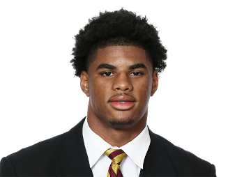
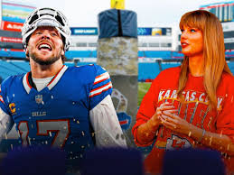
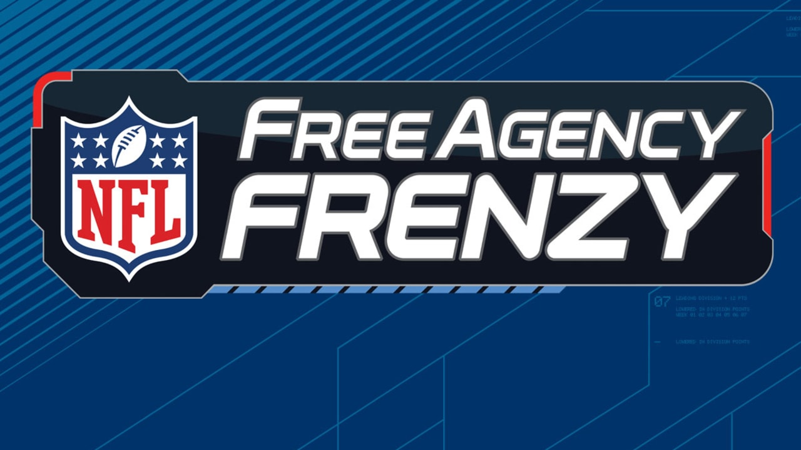
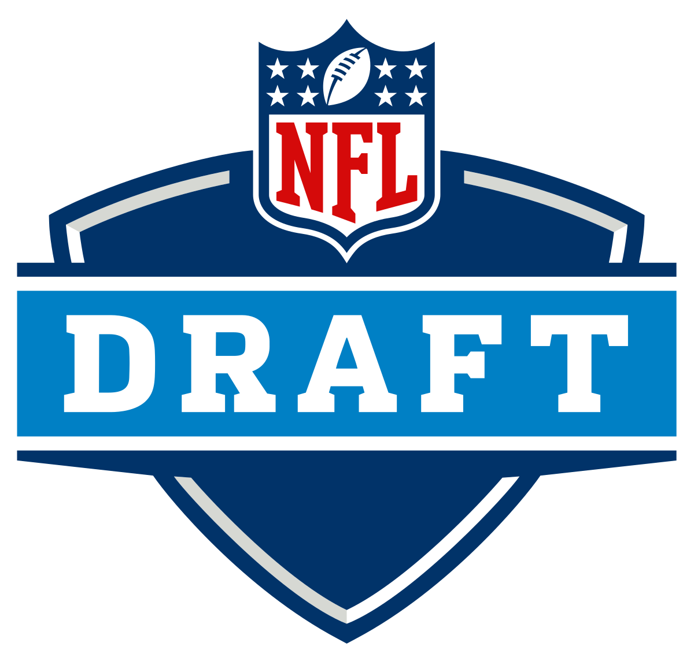

Stefon Diggs was traded to the Houston Texans! This was shocking news to hear as he has been the star WR in Buffalo for the past 4 years now. There has been a lot of drama surrounding him during his time with the Bills, I personally think he is a diva and needed to go! He dropped a key pass in the game vs the Chiefs and then went on to have a tantrum about not being able to beat the chiefs. He had three catches for 21 yards during this game... Crazy for him to not take any accountability for the loss and blame it on the rest of the team. He is a great player and it will be sad to see him leave but he is getting old and has honestly started playing a lot worse, he disappeared for the second half of the season underperforming when it matters most once again! In all seriousness I wish Diggs the best in Houston.

WHAT WE NEED MOST, we need another WR to help out Josh in the passing game. Gabe Davis’s contract is up and we should not bring him back after he had a horrible year. I want to draft a WR in the first round probably aiming for the 6’4 talent from Florida State. WE have a lot of free agents coming up as well which could be devastating to the team, it is important to keep our stars around while we can such as Micah Hyde and AJ Epenesa who are both going to be Free Agents. I think we need to bring both of these guys back as they stepped up this year when they needed to most. Other Free agents I want to sign are as follows.

Chiefs Pregame:
I'm feeling excited about this game! The Chiefs have never come into Buffalo and beaten us. We are going to stand on our home turf and take it to them. Terrell Bernard was a last minute scratch but I still think our defense will be able to contain the struggling Chiefs offense. Josh Allen and the offense have been hot closing out the season and will look to stay hot today! The offense is going to need to get over 30 in order for us to win this game.

Free Agency:
I have no idea what is going on with the team right now. I understand some of the calls that were being made, Tre White hasn't played a full season in three years... BUT he is one of the best CBs in the league, Jordan Poyer is getting up there in age but he was the staple to our defense last season. Without him I don't think we would have made the playoffs, I hate this move more than anything. Another move that I completely hate is Mitch Morse, he was the second best offensive lineman on our team since he has been there. He is a great locker room guy and a beast on the field. I trust Brandon Beane I really do he just has me lost on these moves.

Upcoming Draft:
I am excited for the draft, I know we do not a premium pick but this is the first time in years that we are going to be drafting a skills player in the first round. We have constantly gone defense defense defense. Josh needs some weapons on offense to make the game easier for him, don't get me wrong he could probably make me look like a star WR but he could use some help. I want to draft Keon Coleman as he is a 6'4 speedy wideout. We have nothing like that on our team and he could make a HUGE difference.